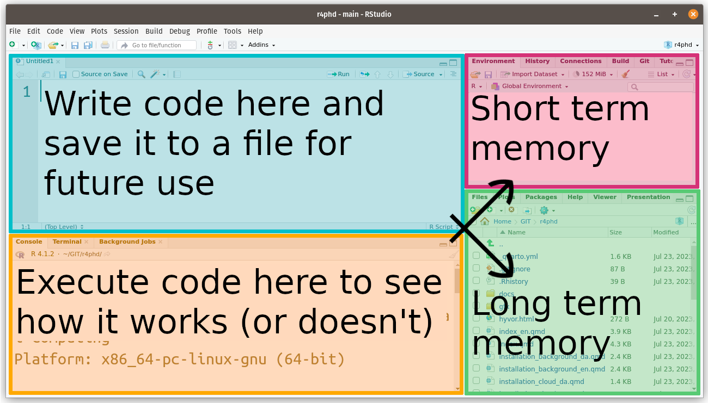

rnorm(n=100, mean=1, sd=2) |> mean()[1] 1.217661How to work effectively in RStudio
December 27, 2023

You can think about your workflow in RStudio as consisting of two separate work stations: you either talk to R or you write for R:
You talk to R in the console (orange), but the entire conversation is lost when you close RStudio!
If you tell R to create some data, it is stored in the short term memory and you can talk R about it, but it is lost when you close RStudio.
If you tell R to do something that is not valid R code, it will complain (error).
Note If you tell R to write something to a file, that file will not be lost, but your command to do so is.
In the text editor (blue) you can write anything to be saved to a text file.
It will not be read by R until you specifically ask it to.
If you write something that isn’t valid R code, you will not get an error (albeit RStudio may give you a hint) … in fact, you write a shopping list in the text editor, if you want to and R won’t complain.
A typical workflow consists of ping-pong’ing back and forth between i) testing code in real-time (console and short term memory) and ii) storing working code in a text file.
Let’s say you want to use the functions mean and rnorm to calculate the mean of a sample of 100 from a normal distribution. The following code should do the trick:
…before using that code in you manuscript, you might want to check it out in the console:
Perhaps, you then realize, that the result has too many digits and you amend your code:
Open RStudio and create and empty R script by menu: File / New File / R Script or keyboard: CTRL-SHIFT-n
rnorm(n=100, mean=1, sd=2) %>% mean() into the console and execute it by pressing ENTER – what happens in the text editor?rnorm(n=100, mean=120, sd=25) %>% mean() into the text editor and press ENTER – what happens in the console?rnorm(n=100, mean=20, sd=250) %>% mean() into the text editor and press CTRL+ENTER – what happens in the console?Bonus question Amend the code in the text editor so that the output of the R command is ascribed to a variable called x. What happens in the Environment tab of the Environment pane, i) when you added the code to the text file and ii) when you copy/paste/execute (CTRL+ENTER) the code in the console?
When you close an R project, RStudio will ask you whether you want to save a ‘Workspace image’.
A workspace image stores the information currently in the console and the short term memory (Environment) and restores it, the next time you open the project.